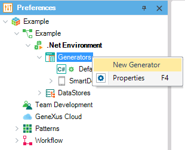

Sometimes you may want to provide an application generated with a mix of generators. For example, to improve performance: Web objects generated in java and batch processes in RPG. This is why you can associate objects to generators, and it works as follows: A main object is associated to a generator (default, reorg, or a user-defined one) which actually defines the target language (C# or Java) to generate. Setting a Generator to a main object lets GeneXus know with which generator it has to build any object of the main's call tree. Note that an object can be called by more than one main, so it can be generated with different generators.  Notes
|